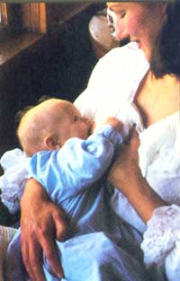
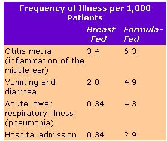

These fascinationg new discoveries about nursing should interest even the most experienced mother.
According to a recent study, only 57.6% of new American mothers breast-feed their babies. But instead of repeating the common arguments for nursing-in an attempt to convert the other 42.4%-I'd like to share, with all parents, some of the recent scientific findings concerning breast-feeding and how the mother-child relationship can develop during this special time.
Before the breasts of a new mother produce milk, they release a thick, yellow substance called colostrum, which has immune properties and which is actually higher in protein, minerals, vitamin A, and nitrogen than milk is. Colostrum coats the baby's stomach and intestines to help ward off harmful diseases, such as polio and pneumonia, and helps the baby pass meconium-a tarry substance that accumulates in the intestines. Also, cells in colostrum called macrophages destroy potentially dangerous bacteria.
When breast milk begins to flow (approximately two to three days after delivery), it, too, provides important vitamins and minerals for your baby, including the brain-cell-builder taurine. While taurine is not an essential amino acid, its high concentration in breast milk does seem to indicate a need that cannot be met by the child's own body. But how much taurine is in formula or cow's milk? None! (Have you ever seen a smart cow?) Yet, extremely high levels of this "smart" substance are found in the brains of children, indicating that it is an important aid to brain growth. Perhaps not coincidentally, 96% of brain growth occurs by the age of five years, and the average age at which a child is weaned in most cultures that practice infant-led weaning is-you guessed it-five years.
Two commonly told stories about breast milk are that it has very little iron and that it lacks vitamin D. But the fact is that breast milk does contain sufficient amounts of both nutrients, providing the mother has them to give (she should follow a balanced diet and boost her daily caloric intake to about 3,500). True, cow's milk and formula might contain more iron, but it is in a form that is poorly absorbed by infants. So babies fed these substitutes get anemic around six months of age if they don't receive supplemental iron. This is not true of breast-fed infants. For example, a group of babies in Japan were totally breast-fed for two years without any difficulties.
In the case of vitamin D, researchers spent a lot of time and money fruitlessly looking for that essential nutrient in the fatty portion of breast milk. But where was it? In the watery part they normally threw down the sink! Now scientists realize that there is no reason to give a nursing child vitamin D supplements... even if Mom is an Eskimo and doesn't see the sun for six months!
Disease resistance is another benefit of breast milk, which contains 37 known immune mechanisms. These are present the entire time a mother breast-feeds her child, and can be divided into the following categories: protective bacteria, enzyme "attackers," protein binders, antiviral agents, and antibody "defenders." It is the job of these "fierce" mechanism groups to find and destroy any viruses or bacteria that may harm the baby... while also making sure the youngster gets enough protein and nutrients. However, as soon as the baby is exposed to solid foods-or even a bottle of sugar water-17 of these immune mechanisms are destroyed (by the E. coli bacteria that are introduced) and can never be restored.
Overall, studies have shown that bottle-fed babies are sick more often than breast-fed babies. This is evident in the following chart:
A study done in India (where breast-feeding is more the norm than the exception) indicated that out of 3,684 babies observed, 7 out of the 2,031 breast-fed children got pneumonia, whereas 48 out of the 1,653 who were bottle-fed got the disease.
If you become sick with a "bug" while nursing, don't fret about spreading the sickness to your child. Amazingly enough, white blood cells appear in the breast milk on the fourth day after the mother is exposed to the illness-cells her body has created specifically to eat that bacterium or virus. Thus your milk will give your child a specific antidote for the illness you are worried about. (This sickness-healing sequence obviously works better if the mother gets sick first . Fortunately, most times, mothers are "considerate enough" to do so.)
In general, it is best to avoid drugs (including the social ones) while nursing. Even aspirin must be taken with caution, since approximately one-twelfth of an adult dosage is equivalent to a full dosage for a ten-pound baby. To find out if a particular medicine is safe, please consult your local La Leche League leader, who should have a copy of the book Breastfeeding and Drugs in Human Milk , by Gregory and Mary White. The Whites' book has the most complete listing available of which drugs are secreted into breast milk, and in what quantities. This is a much more accurate, up-to-date, and reliable source than the Physicians' Desk Reference (PDR), the text most pediatricians use. (Remember that drugs secreted through the placenta are not necessarily secreted through the breast, since the placenta and the breast are different kinds of transfer organs.)
Breast-feeding benefits the mother by stimulating the release of the hormone prolactin, which has been found to induce maternal behavior in laboratory animals. Another "nursing" hormone, oxytocin, helps to squeeze the milk into the ducts that lead to the nipple; it also works to relax the mother. Then too, the baby's sucking helps the mother's uterus contract to normal size, lowering the amount of blood loss.
Of course, the increased opportunity for parent-child bonding offered by breastfeeding is a widely known benefit of nursing, which brings up an interesting sidelight. A baby can have lots of brain cells, but they won't do any good unless they're interconnected. The nerve fibers that connect these cells are called dendrites. And what develops dendrites? You probably said breast milk... right? Wrong! Touching develops dendrites. Holding, touching, and stroking a baby, as a mother naturally does while nursing (you can prop a bottle but not a breast!), helps the child develop the way nature intended.
If this thin, watery stuff called milk is so good, when do you need to start feeding your baby "real" food? This is a difficult question to answer. Recent studies have shown that hydrochloric acid-used to digest most protein-doesn't even appear in the stomach until the end of the seventh month and doesn't reach a peak until the eighteenth month. Co-incidentally, 18 months is approximately when rennin-used to digest the protein in breast milk-has disappeared. Also, it seems that the digestive juice for carbohydrates-ptyalin-doesn't appear until the end of the baby's first year. (The old books on baby care always recommended that mothers pre-chew any solid food.)
You may say that your baby was so hungry that he or she was fighting for solid food at five months, but actually this probably isn't what was happening. The fact of the matter is that in your house you have this strange custom. Each day without fail you gather the clan around a square board and all of you stuff strange-looking things in your faces. The baby probably just wanted to be part of the clan ritual. Remember-babies tend to mimic the behavior of those around them.
With this, I leave to you the decision of when to start foods, but let me offer two pieces of advice. First, don't force food on your baby. He or she will let you know when breast milk isn't completely satisfactory by showing an increased interest in nursing sessions (which you will soon discover is not due to a growth spurt). Second, instead of feeding your child, just let the youngster feed him-or herself, from food you place on the high chair tray. (As the father of eleven children, I know this can be quite a messy experience!)
This way, not only will your child be less likely to overeat, but the little one will also tend not to eat foods he or she may be allergic to. By the way, heavily sweetened foods, honey, spicy or salty foods, and nuts are definitely not recommended for babies.
As soon as the baby is introduced to anything other than breast milk, the weaning process has begun. It is best to do this slowly, and, as with solid foods, let the baby tell you when he or she is ready to "leave home." (Remember-release, not reject.) Contrary to popular belief, a child who is weaned at a late age is not any more dependent than a child weaned earlier. In fact, the late nurser may be more independent because the choice to break away from Mom was his or her own. So, don't let yourself be influenced by the behavior or reaction of other mothers-this should be a decision between you and your child.
Breast milk is species-specific. It has everything in it that the baby needs, in the right amounts. It fulfills both physical and emotional needs. It is not habit-forming, and all children wean themselves when they have had enough.
Try it. You, and yours, will like it.
EDITOR'S NOTE: Dr. Wootan offers a fine seminar for parents on basic pediatrics. The classes teach parents how to reduce their medical bills, relate to a doctor on a more equal level, handle emergency situations, and confidently care for a sick child. For specific information, write to George Wotan, M.D., Box 101 K, RD 7, Kingston, NY 12401.
For more information about breast-feeding-even in special cases-MOTHER suggests you consult the following:
The Complete Book of Breastfeeding, by Marvin S. Eiger, M.D., and Sally Wendkos Olds ($4.95 plus $1.00 shipping and handling from Workman Publishing Co., 1 W. 39th St., New York, NY 10018).
Parents Book of Breast Feeding, by Susan Flamholtz Trien ($2.95 plus $1.00 shipping and handling from Random House, Inc., 400 Hahn Rd., Westminster, MD 21157).
The Womanly Art of Breastfeeding, by La Leche League International ($9.95 plus $1.00 shipping and handling from La Leche League International, 9616 Minneapolis Ave., Franklin Park, II 60131).
You Can Breastfeed Your Baby ... Even in Special Situations, by Dorothy Patricia Brewster ($12.95 plus $2.00 shipping and handling from Rodale Press, Book Division, 33 E. Minor St., Emmaus, PA 18049).
Does the thought of nursing give you butterflies? If so, here are some helpful hints.
The first two or three weeks of breastfeeding can be very difficult for a new mother, but take a deep breath... and relax! It is very important to get plenty of R and R during the nursing period, as this will stimulate the let-down reflex-the squeezing of milk from the alveoli. Fear, anxiety, confusion, or fatigue can hamper this reaction, so find a comfortable, tension-free spot to nurse.
Two common misbeliefs are that small-breasted women cannot produce enough milk and that if you do not have enough milk when you begin nursing, you will never satisfy your baby's great need for nourishment. Not true! In all pregnant women a physical change occurs in the milk ducts that enlarges the breasts. Likewise, the more your baby nurses, the more milk your breasts produce. And a new baby nurses approximately every 1-1/2 hours at first.
Initially, try 7-10 minutes on each side to help prevent nipple soreness... then gradually increase this time. (Nipple-toughening exercises during pregnancy, such as frequent exposure to air, are highly recommended.)
It may take almost a week for you and your baby to nurse successfully-but don't give up! Going to a series of La Leche League meetings while you're pregnant will help establish a support system, in case you have problems later. In the event of any middle-of-the-night crises, ring up La Leche League International at 312/455-7730. An expert is always on hand to offer advice and support. Good luck!
|
 |
 |
|